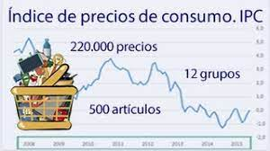

Economía
Económica clave
Anuncio de tasas de interés, apuestas para Iamcec e IPC. El banco Central marcará pauta cuando publique el Imacec de abril este
lunes, difundará su informe de Política Monetaria. Por su parte, el INE
revelará el dato inflactorio de abril.
|
 |
Iteligencia Artificial
Cómo las universidades están liadiando con ChatGPT
Más exámenes orales, ensayos escritos a mano y tareas en clase: Cómo las universidades están liadiando con ChatGPT
la proleferación de casos en que en esta herramienta de IA se está mal usando para redactar trabajos académicos está llevando a las instituciones a reformular sus metodologías
de enseñanza y evaluación.Como este bot ya puede hacer trabajos para la universidad, algunos profesores están elaborando preguntas que, esperan, sean
demasiado ingeniosas para ChatGPT, como pedir que escriban sobre sus propias vidas.
|
|
Nacional
Informes ACADES
Proyectos industriales de desalinización en Atacama podrían cambiar el escenario hídrico en Chile.Recientemente, la Asociación Chilena de Desalinización (ACADES)presentó oficialemnte el primer catastro nacional de plantas y proyectosde desalinización de agua de mar en el país.
|
|